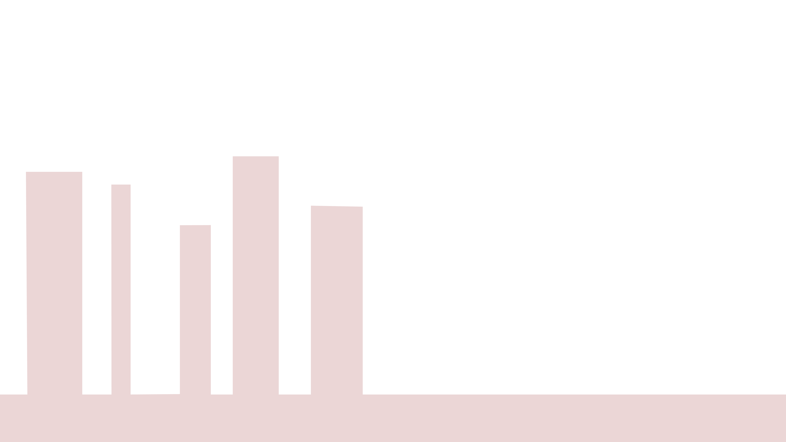
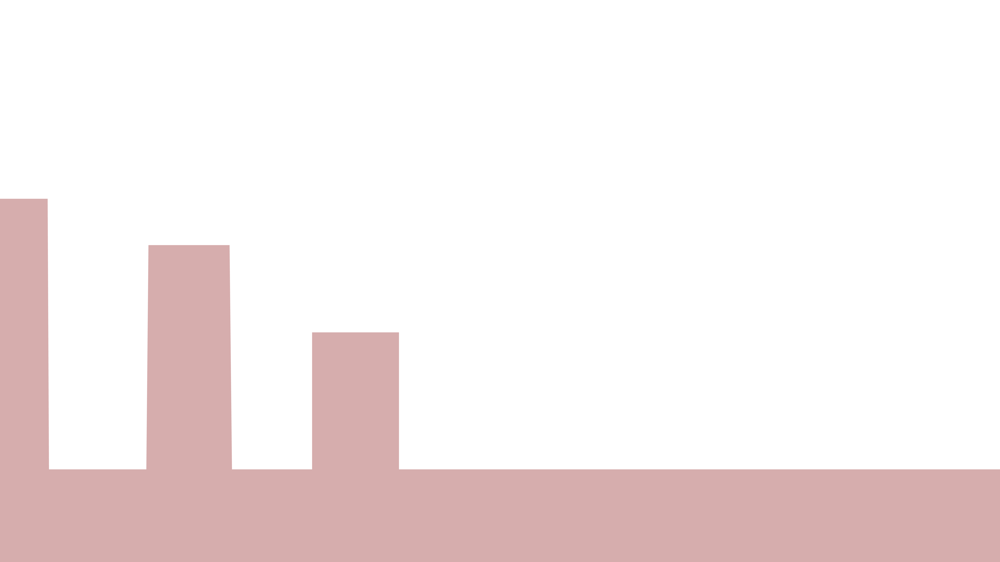
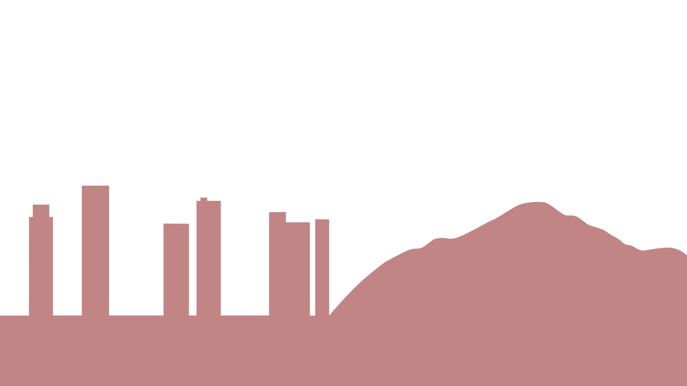
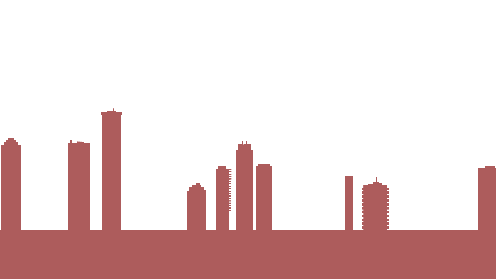
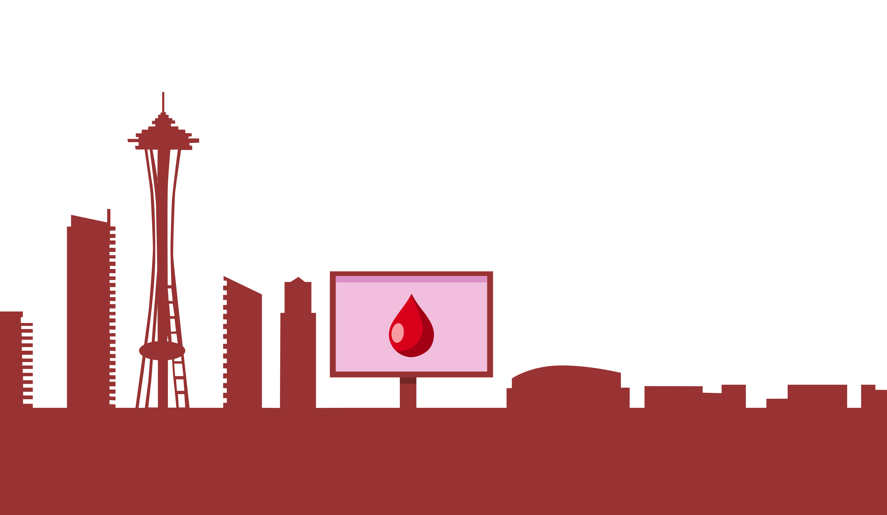

Eco-Friendly Alternatives for Menstrual Health
    
Welcome to our website dedicated to advocating and educating about menstrual and environmental health. We
believe that these two interconnected topics play a crucial role in promoting overall well-being and
sustainability. GEM FLOW stands for Green Eco-Friendly Menstruation Flow. Through informative visuals and engaging resources, we aim to empower individuals with
knowledge about menstrual health and eco-friendly practices. Our goal is to break the stigma surrounding
menstruation, provide comprehensive information on menstrual hygiene, and promote environmentally conscious
choices for menstrual products.
Together, we can make a positive impact on both personal well-being
and the environment. Join us on this journey as we work towards a world where menstrual health is
prioritized, and the environmental impact of menstrual products is minimized.
dollars spent on period
products over a lifetime
pads/tampons used
over a lifetime
period products get
thrown away each year